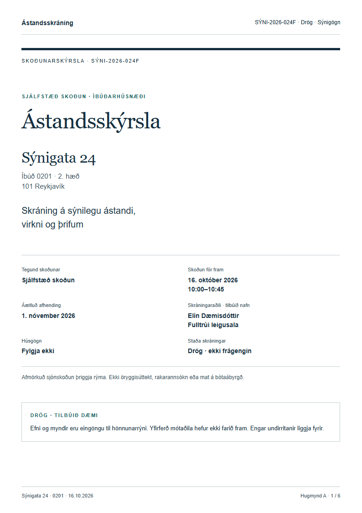
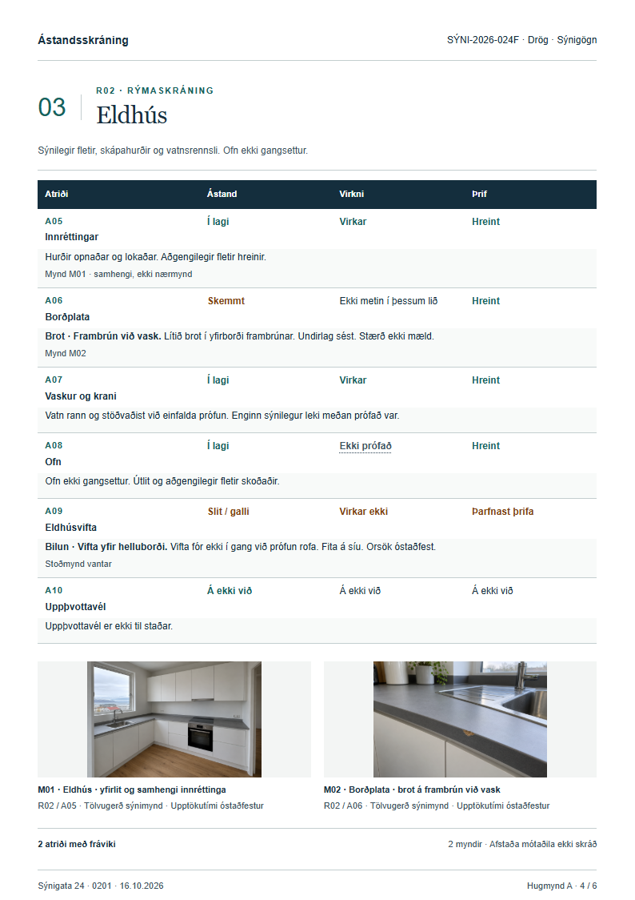
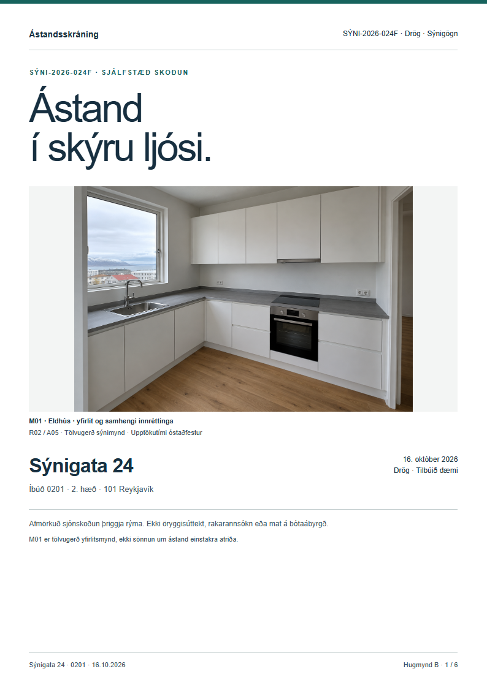
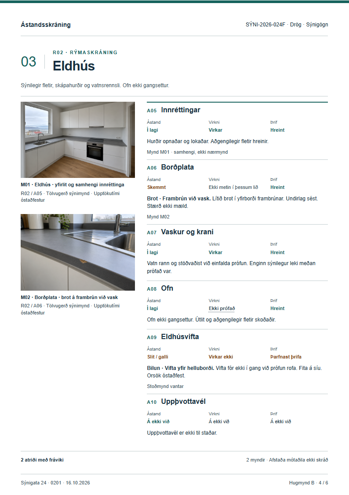
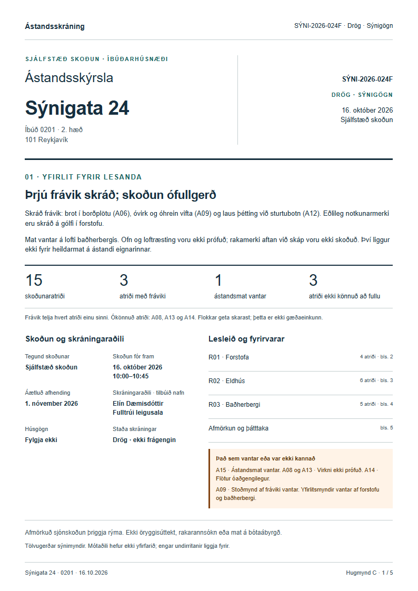
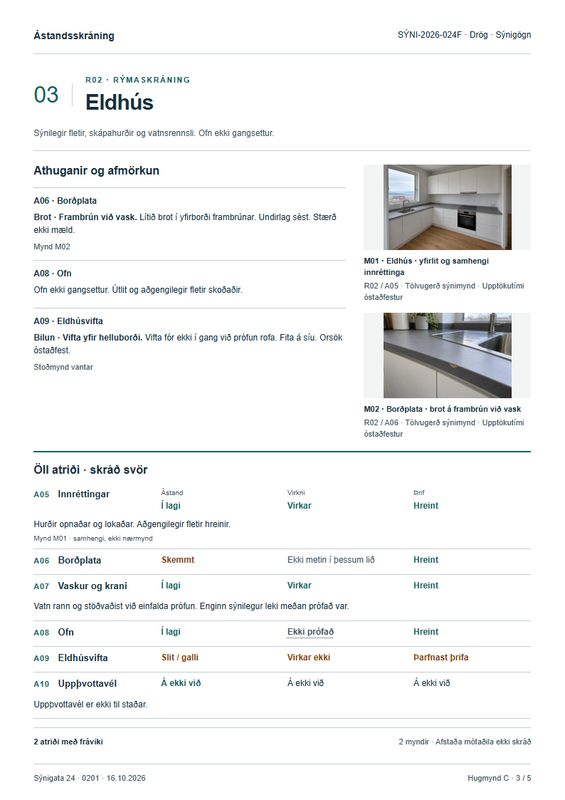

Þrjár lesleiðir · Sömu athuganir
Þrjár leiðir að skýrri ástandsskýrslu
Hér eru þrjár ólíkar framsetningar á sömu tilbúnu skoðuninni: þrjú rými, 15 atriði og þrjú skráð frávik. Veldu „Að mestu í lagi“ til að sjá sama snið með færri frávikum. Þetta eru tvö sjálfstæð dæmi, ekki samanburður á fyrra og síðara ástandi.
Hugmynd A · 6 síður
Formleg skoðunarskýrsla
Hefðbundin forsíða, sérstök samantekt og ítarlegar töflur. Myndir fylgja skráningu hvers rýmis.
Forsíða

Rýmaskráning · eldhús

- Sterkur rekjanleiki og auðveld uppfletting.
- Tvær síður áður en rýmaskráning hefst.
- Töflur raðast lóðrétt á síma.
Hugmynd B · 6 síður
Nútímaleg stafræn skýrsla
Stór yfirlitsmynd og skýr ritstjórn. Myndir til vinstri, athuganir til hægri; samfelldur lestur á síma.
Forsíða

Rýmaskráning · eldhús

- Myndefni fær mesta plássið.
- Auðlesið atriði fyrir atriði.
- Forsíðan miðlar litlu um niðurstöður.
Hugmynd C · 5 síður · Mælt með
Samsett fagleg skýrsla
Stutt yfirlit á fyrstu síðu. Athuganir og myndir við hvert rými, síðan þétt skrá allra svara.
Forsíða og samantekt

Rýmaskráning · eldhús

- Helstu niðurstöður og takmarkanir sjást strax.
- Öll 15 atriðin fylgja með, líka þau sem eru í lagi.
- Þéttari framsetning krefst agaðrar síðuskiptingar.
Tillaga: halda áfram með C
C nýtir forsíðuna til að útskýra hvað liggur fyrir og hvað vantar. Lesandi getur byrjað á yfirliti, fundið tiltekið atriði og séð stoðmynd í samhengi. Fimm síður í þessu afmarkaða dæmi eru afleiðing skipunarinnar, ekki markmið um hámarksfjölda síðna. Lengri lýsingar eiga að fá framhaldssíðu með endurteknu auðkenni, ekki minna letur.
Allar upplýsingar og myndir eru tilbúnar. Hönnunartillögur, ekki staðfest skoðun eða frágengin skýrsla. Skjámyndir sýna A4-stílsnið í Chromium; enginn PDF-útflutningur er útfærður.